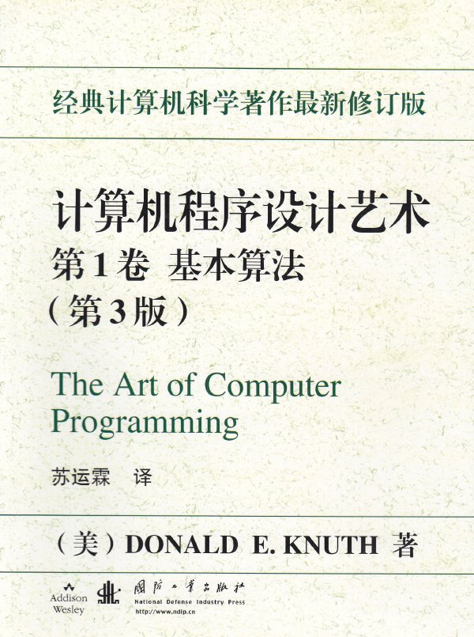

想当初刚入大学，自信满满的去图书馆抱回了1本TACP，看了1学期，不求甚解，什么也没懂，就还回去了。。。
如果09年下半年没事了，就开始真正的啃这本TACP了！

截图：

计算机程序设计艺术介绍
《计 算机程序设计艺术》重译自Donald E. Knuth(汉名高德纳)的三卷著作："The Art of Computer
Programming: 1. Fundamental Algorithms; 2. Seminumerical
Algorithms; 3. Sorting and
Searching"；三卷中文名为《基本算法》、《半数值算法》及《排序与查找》。本书内容博大精深，作者因为三卷书获得美国计算机协会1974年图灵
奖(该奖被国际公认为计算机科学领域的最高奖项)。
本书作者D. E.
Knuth是在计算机学界十分著名的学者，在本领域享有很高权威和盛名，他的这部著作是无数计算机专业人员的学习教材和参考读物，也是许多专业研究工作者经常阅读的经典。本书已被翻译为几十种文字在世界各地出版，英文原版书在国外已经是第11次印刷。
该书1999年底被American
Scientist列为20世纪最佳12部学术专著之一(与狄拉克的量子力学、爱因斯坦的相对论、曼德布罗特的分形论、鲍林的化学键、罗素和怀特海德的数
学基础、冯诺意曼和摩根斯坦的博弈论、维纳的控制论、伍德沃和霍夫曼的轨道对称性、费曼的量子电动力学等科学史上的经典著作并列)。
本书结合大量数学知识，分析不同应用领域中的各种算法，研究算法的复杂性，即算法的时间、空间效率，探讨各种适用算法等，其理论和实践价值得到了全世界计
算机工作者的公认。书中引入的许多术语、得到的许多结论都变成了计算机领域的标准术语和被广泛引用的结果。另外，作者对有关领域的科学发展史也有深入研
究，因此本书介绍众多研究成果的同时，也对其历史渊源和发展过程做了很好的介绍，这种特色在全球科学著作中是不多见的。
作者高德纳几十年来对此书倾注的心血难以计量，他力求随着有关领域的最新进展不断更新内容，力求随着原版书的不断重印令其技术的、史实的和出版方面的错误
或不当减到极少(他为了能够满意地随时修订自己的著作，发明了计算机排版系统TEX和字形设计系统METAFONT，无偿公诸于巨，使全世界的科技文献作
者普遍受惠)，现在其最新印次已很难找到错误，而相关史实的新证据、相关研究的新进展、习题的新解答仍在及时充实到勘误表或新的印次中。
翻译《计算机程序设计艺术》经过的片断回忆
苏 运 霖
那是在1973年至1974年期间，为了在吉林大学开设有关软件的课程，我被吉林大学派往中科院数学所进修，同时和数学所、中山大学和贵州大学的同志一起
协作，从事XR(系列软件)项目的某个子课题的研究。当时，国内对于计算机软件的重要性才刚刚有所认识，因此对于程序设计、操作系统等，以中关村及北大、
清华为中心，掀起了一个引进国外先进技术的热潮。就在这期间的一个周日，我来到五道口的外文书店，猛然发现了醒目的"The Art of
Computer
Programming"的3卷大部头新书，心绪为之一动，通过流览书的目录和部分章节，感到这是极有价值的书，在决心认真阅读学习的同时，心里也产生了
把它们译成中文的念头。
当然，这样的重头书，不会只引起我一个人的注意。计算所和数学所的许多同行也都传开了有这本新书的消息。人们自然也都感到，把它译出，很有价值。
不久之后，我就回到了吉林大学。长春的外文书店，也都有了这套书，我向当时在一起工作的管纪文先生介绍了这套书，并把我想把它们译出的想法告诉了他。当然
我们也告诉了当时任系主任的中科院学部委员，我们的老师王湘浩教授，他对我们这一重大举动，也深表支持。于是，我们也就这样开始干起来。
但是，那还是"文化大革命"时期，虽然已经不是只抓革命，不搞生产的文化大革命时期；特别是在邓小平复出，主持中央工作的阶段，学校已开始了招生和教学。
然而，压倒一切的还是革命，后来又搞起批林批孔，矛头所指，直接针对周总理，后来又再次搞起批邓。当时，我白天时间，全在挖防空洞中消耗掉了，所以，我只
能在晚上和清晨进行翻译工作。我和管纪文先生的分工是：我全部负责翻译，再由他誊清我的译文，并做一些润饰工作。整个3卷，我们都是这样干的。我们的翻译
工作，真正地做起来，是在1975年底才开始的。
在我们开始从事这一工作时，当然受到人们的注意。一种人认为，我们干不了，这也有一点道理，因此在此之前，我们都还没有干过这样重大的翻译工作，特别是，
这个领域对我们来说，完全是新的。但是，实际上，我们并非毫无基础，在此之前，我已经翻译过由当时计算所所长许孔时访问美、加带回的一本《操作系统》教材
(多伦多大学)，并且全文刊登在由当时的1015所出版的《计算机参考资料》上，当时这一译文，就倍受读者称赞，认为译文精确、流畅，可读性强；此外，我
还翻译过当时著名的《课程表68》这一ACM制定的教学大纲。所以，只能说以前的工作，在其工作量上、难度上，没有现在的工作这么大而已，但是，有了以前
的基础，我们怎么就干不了呢!所以对于这种人和他们的责难，我们毫不理会。
另一种人，则站在"革命者"的角度，说我们又在搞崇洋媚外的一套，说我们宣扬西方的文明，宣扬西方的生活方式，不知怎么回事，当时竟传出，这本书是宣扬资
产阶级生活方式的。我曾为了翻译《课程表68》而受过批判和指责，所以，对于现在的责难，我也就不当一回事。我们坚信，这是一本高质量的科技著作，它在国
外引起重视，在国内，也应得到同样的重视，才有利于我国的科技发展。在我们开始进行翻译时，我们并没有联系出版社讨论出版事宜。只是到了我们把整个第1卷
都已翻译完时，我们才开始找出版社。而关于我们进行这套书的翻译的消息，不胫而走。在北京的很多同行中，许多人早已知道此事。当我们把第1卷的翻译稿带到
北京后，许多朋友也都主动热心地帮我们联系此事。在这方面，给了我们很大帮助的是北京1015所的王寿松、梁大同、严友淳等同志，还有数学所的陆汝钤院
士、周龙骧教授等，以及曾经到过斯坦福大学的软件所董韫美院士等。他们帮我们联系了国防工业出版社
(为什么没有联系科学出版社，我们也不大清楚，可能1015所同国防工业出版社更密切些，是其中的一个原因吧)，最后，我们得到的答复是，我们的书有望在
国防工业出版社出版。在这个过程中，我们也就开始同国防工业出版社的四编室的同志们打交道，当时四编室主任是周先珂同志，编辑室里有张均武、徐德霆、周烈
强等同志，而负责从事本书编辑工作的，最初就是徐德霆同志。
然而，事情却决非这么容易，因为尽管我们在下边已开始操作，但此事成与不成，仍须经过上头的同意。据说，国防工业出版社的总编也无权批准，所以，尽管我们
把书稿交给了出版社，但后来却迟迟没有下文。我们当然很着急，想知道事情的真相。然而我们又没有任何了解真相的渠道。后来，听了1015所同志们的介绍，
我们才知道阻力来自于上头。我们也才知道，所谓此书宣扬资产阶级生活方式、宣扬西方文明等，实乃空穴来风，正是上头有人在这么说。而且，也才知道，许多国
内当时的专家，如计算所阎沛霖、罗沛霖，15所总工陈力为等，都以他们政治上的大无畏精神和业务上的远见卓识，给了我们支持，他们力荐这套书的出版，最后
才使上边儿为我们出书开了绿灯，也才使后来的工作，顺利地进行下去。这段使我们的工作险些胎死腹中的时间，有两三个月之久。这也就是为什么我要在本书的新
译本的前言中，回忆此事，并对那些曾经帮助过我们的领导和专家致以深深谢意和敬意的原因。当然，说起来，最根本的是，邓小平同志改革开放，科教兴国的思
想，使中国不再是闭关锁国，夜郎自大，这才有我们在该书译者前言中提到的祖国科学的春天。
这里还要提到本书作者D. E.
Knuth的访华之行。1977年，Knuth携夫人和两个当时尚未成年的女儿访问中国，为时3周。陪同他访问的是加州圣地亚哥大学的华裔教授胡德强先
生，胡先生是北京籍人，但在台湾受教育和成长，讲一口流利的北京话。Knuth来华访问的消息，由科学院数学所的陆汝钤教授等通知我和管纪文先生，并请我
们也从长春前去北京，参加同Knuth的会见和听取他的报告、同他座谈等活动，这使我们有幸同本书作者认识。他当时还未满40岁，然而已经学富五车，蜚声
四海，并荣获计算机界最高奖--图灵奖。但见他高大健壮，风流倜傥，而又彬彬有礼，极富学者风度。他在北京的讲话，谈到了算法和算法分析的重要性以及一些
他认为甚有价值的问题。也谈到了后来成为他的重大成果的计算机印刷和排版技术——METAFONT和TEX。
胡先生向我们讲述了他的一些生平。他是在加州理工学院接受的高等教育，由于他聪明过人，又十分勤勉发奋，因此在大学阶段就已经做出了令业界瞩目的成就。后
来，他没有通过硕士阶段，就直接读博士学位。他在CACM杂志社曾经工作过一段时间，审查和研究了许多算法，从而为他成为算法设计和分析的先驱打下了基
础。他不仅在计算机科学领域有极高造诣，而且兴趣广泛。他酷爱文学，对莎士比亚戏剧深有研究，而且他本人就出版过小说。他还热爱音乐，对音乐也很有研究。
后来，还写过用计算机谱曲的文章。他生活很有规律，每天都有固定安排，如周一是阅读和处理文件的时间，周二是接待学生和客人来访时间，周三爬山，周四上
课，然后其它是研究工作时间。他有过人的精力，每天可以不离书案连续工作十几个小时。还讲到他的夫人，她是学过中文的。大概就是由于这点吧，使他们对中国
很友好。他在来中国之前，要他的学生——姚储风为他取了中国名字——高德纳。当他得知我和管先生是他的著作的中文译者后，对我们表示了鼓励和支持，后为当
我们请他为中文版写序时，他欣然答应，并且很快就寄来了。但是遗憾的是，后来该书第1次印刷时，该序未被收入其中，使我觉得很难向他作解释。然而在第2次
印刷时，还是收进来了。这次，在我们出版新版本时，他又一次为中文本写序，足见他对于此书在中国出版的支持，而且信中充满了作者对中国读者的殷切期望。信
中提到要用他的中国名字，这大概也是因为当初我们没有用他的中文名的一点不满而发吧。
这里我还想透露一件鲜为人知的事情。在80年代，中国开始大规模公派留学生出国，我当时也属于政府考虑选派的对象，因此曾经去信给他，表示希望他帮助安排
到斯坦福大学进修。他回信表示进修不可能，但他可以让我攻读他的博士学位。由于不知道博士学位是由对方提供资助的，我竟由于感到经济上没有保证而没有接
受。这成为日后的一大遗憾，我把这当成一生中最大的失误。
在第1卷出版的过程中，我们继续进行第2卷和第3卷的翻译工作，而且所有3卷书，在我于1980年调到暨南大学之后不久，都全部完成了。但是3卷的出版顺
序，却并非按照1，2，3的自然顺序，这是因为当时有些专家认为第3卷比第2卷更急需，要我们先把第
3卷搞好。于是造成了历史上这一个事实--第3卷先于第2卷出版。而且，由于书价的剧烈浮动，使书的印量也发生了很大变化--第1卷头一次印了30
000册，第2次又印了10 000册；但第3卷则仅印了10
000册；第2卷，差不多推迟10年出版，和第1卷定价相差达10倍，因此印量仅3000册。
第2卷的推迟，还有一个原因，即原书作者在该书出版不久，即出了新版，新版大概是1984年或
1985年出版的，因此出版社自然希望我们重新按新版本译出。此时我已经在新西兰，而译稿交给陆汝钤院士校阅。那时他把译稿放在他的办公室里，办公室里是
七八个人一起办公(可见当时知识分子的工作条件何其艰苦)，结果，有一年，在他出访而所内搞迎新大扫除时，把译稿当成废纸扔掉了。所以在1986年，我从
新西兰回国之后，在出版社找我要稿子时，陆教授才发现稿子丢失了。还好，并未全部扔掉，大概丢了三分之一多一些。他为此深感抱歉，我也无话可说，只好重新
翻译。在这期间，又不知什么原因，一直使该书的出版拖延良久，直到1992年才终于出版了。
以上这些事情，不觉之间，已经距今20余年，至少也有10余年了。在我重操旧业翻译该书新版时，回忆它们，感触良深。写下它，作为永远铭记的一段人生经历。
英文扫描版djvu截图：

最后来个我们的上帝的介绍：(经典语句被我加黑了。。。)
D.E.Knuth:
伟大的智者——Don E.Knuth，中文名：高德纳(1938-)算法和程序设计技术的先驱者。Oh,God!一些国外网站这样评价他。一般说来，不知道此人的程序员是不可原谅的。其经典著作《计算机程序设计艺术》更是被誉为算法中“真正”的圣经，像KMP和LR(K)这样令 人不可思议的算法，在此书比比皆是。难怪连BillGates 都说：“如果能做对书里所有的习题，就直接来微软上班吧！”对于DonE.Knuth本人，一生中获得的奖项和荣誉不计其数，包括图灵奖，美国国家科学金 奖，美国数学学会斯蒂尔将（AMS SteelPrize），以及发明先进技术荣获的极受尊重的京都奖（KyotoPrize）等等，写过19部书和160余篇论文，每一篇著作都能用影响深 远来形容。DonE.Knuth也被公认是美国最聪明的人之一。当年他上大学的时候，常写些各种各样的编译器来挣外快，只要是他参加的编程比赛，总是第一 名，同时也是世上少有的编程达到40年以上的程序员之一。他除了是技术与科学上的泰斗外，更是无可非议的写作高手，技术文章堪称一绝，文风细腻，讲解透 彻，思路清晰而且没有学究气，估计这也是《计算机程序设计艺术》被称为圣经的原因之一。
Donald Knuth自传的开头这样写道：“Donald Knuth真的只是一个人么？”作为世界顶级计算机科学家之一，Knuth教授已经完成了编译程序、属性文法和运算法则的前沿研究，并编著完成了已在程序 设计领域中具有权威标准和参考价值的书目的前三卷。在完成该项工作之余，Knuth还用了十年时间发明了两个数字排版系统，并编写了六本著作对其做了详尽 的解释说明，现在,这两个系统已经被广泛地运用于全世界的数学刊物的排版中。随后，Knuth又发明了文件程序设计的两种语言，以及“文章性程式语言”相 关的方法论。
到目前为止，Knuth已经出版发行了17部书籍，一百五十余篇论文，包括了巴比伦算法、圣 经、字母“s”的历史等多方面的内容。作为一名数学家， Knuth曾开创了几门新的课程，为纯计算数学做出了很大贡献。他所获得的奖项和荣誉数不胜数，其中最值得注目的有1974年美国计算机协会图灵奖 (ACM Turing Award)，1979年美国前总统卡特授予的科学金奖(Medal of Science)以及1996年11月由于发明先进技术荣获的极受尊重的京都奖(Kyoto Prize)。在不多的业余时间里，Knuth不仅写小说，还是一个音乐家、作曲家、管风琴设计师。
是Knuth独特的审美感决定了他兴趣广泛、富有多方面造诣的特点，Knuth传奇般的生产力 也是源于这一点。对于Knuth来说，衡量一个计算机程序是否完整的标准不仅仅在于它是否能够运行，他认为一个计算机程序应该是雅致的、甚至可以说是美 的。计算机程序设计应该是一门艺术，一个算法应该像一段音乐，而一个好的程序应该如一部文学作品一般。(神了。。。)
早期经历
Knuth，1938年1月10日生于美国威斯康星州密尔沃基市。他在模式方面辨别和熟练操作 的能力在八年级的时候开始显现出来。当时，当地的一家糖果制造商举办了一项比赛，比赛要求选手用其品牌“Ziegler's Giant Bar”中的字母组成新的单词，规定时间内组成单词数量最多者获胜。Knuth参加了比赛，并以单词总数4500余个远远超过了裁判的2500个的标准， 轻松赢得头奖。赛后，Knuth说道，如果自己当初想到回答时用些省略符号的话，还能写出更多。这次比赛Knuth为学校赢得了一台电视机，还为每个同学 赢得了一根糖果棒。
Knuth多产的出版事业开始于他的高中时代，当时他的科技设计被Westinghouse Science Talent Search 光荣提及。他的“Potzebie System of Weights and Measures ”的基础章节被登在“Mad”杂志第26号，“Power”的基础章节被叫作“whatmeworry”。“Mad”的编辑认识到了年轻的Donald著 作的重要性，以25美元买下了他的文章，并刊登在了其1957年6月的期刊上。
高中的时候，Knuth对数学并没多大兴趣，而是把主要精力放在主修的课程：听音乐和作曲上。 他在高中的乐队里吹萨克斯、大号时，曾把 Dragnet、 Howdy Doody Time 和 Brylcream的主题曲联成一段新的音乐。这位著名的科学家在近期评论自己的早期作品时承认：“对于版权，我一无所知。”
虽然Knuth的等级平均分是学校历史上最高的，但是他和他的指导老师还是对他能否成功学习大 学数学持怀疑态度。Knuth说在他高中阶段和大学早期一直有一种自卑感，这个问题一度是他的一个障碍。作为一个大学新生，Knuth没有对于失败的恐 惧，他花了许多时间攻克额外的数学难题，几个月后，他在这方面的能力已经远远超过了其他同学。
高等教育和早期的计算机工作
当Knuth在Case科学院（现在的Case Western Reserve）获得物理奖学金时，梦想成为一个音乐家的计划改变了。Knuth回去继续研究数学是在大二，当时一个爱出难题的教授提出了一个特殊的问 题，并说哪个学生能解决这个问题就立刻记成绩“A”。Knuth跟大多数同学一样，也认为那是道解不出来的题目，直到有一天，他错过了公共汽车，只能步行 去看一个演出，Knuth利用路上这点空闲时间决定尝试一下。那阵子他运气真的是非常好，不仅问题很快就解开了，得到了“A”，还成功地经常逃课。虽然 Knuth也承认，逃课让他有负罪感，但是很明显，他完全有能力补上落下的功课，接下来的一学年，他的离散数学就又得了个“A”，而且还获得了给自己不能 参加的课程评定论文等级的工作机会。
1956年，作为Case的新生，Knuth第一次接触到了计算机，那是一台IBM 650。Knuth说直到一年后，女孩才进入了他的生活。这又是计算机科学界一直以来亏欠科学家们的一个事例之一。(恩，同感。。。)
Knuth熬夜读IBM 650的说明手册，自学基本的程序设计。那时，在高等计算机语言发明之前，程序编写只能用第二代或是汇编语言。这个工作既耗时又困难，因为指令必须根据每 台机器特定的构造编写，而实际上指令只须一步就可从二进制0、1系列转存到计算机硬盘上。Knuth说，有了第一次使用650的经历，他便肯定自己能编写 出比说明手册上介绍的更好的程序。
Knuth很快便开始“闲逛”，编写可以执行数学函数的程序。他的第一个程序是把数字转化为素 数，第三个是做井字游戏（或者说是让计算机在改正每次输的错误的过程来学会玩井字游戏）。作为学校篮球队的经理，Knuth编写了一个根据不同成绩标准评 定每个运动员对球队贡献等级的程序，他的努力赢来了那些认为这样做有助于球队赢得同盟冠军的教练的好评（虽然，无庸质疑，不是每一个运动员都这样认为）。 Knuth的成就成了新闻周刊的标志，他和教练、计算机的照片也被刊登在IBM650后来的说明手册上。
1960年，Knuth从Case毕业时享有着最高荣誉，在由全体教员参加的选举上，他因其公 认的出众成就获得了硕士学位。（直硕啊。。。）1963年，Knuth回到加利福尼亚理工学院攻取了数学博士学位，之后成为了该院的数学教授。在加利福尼亚理工学院任教期 间，Knuth作为Burroughs 公司的顾问继续从事软件开发工作。1968年，他加入了斯坦福大学，九年后坐上了该校计算机科学学科的第一把交椅。1993年，Knuth成为斯坦福大学 “the Art of Computer Programming”（计算机程序设计艺术）的荣誉退休教授。
早期成就和计算机程序设计艺术的开端
1962年，Knuth还是个研究生的时候就开始了他计算机程序的工作。那时，他已经开始了个 人咨询，为不同的机器编写编译程序。编译程序是一种翻译原始或高级语言和对象或二进制机器语言的中间语言。在不知道众多软件公司正高额寻求成百上千的编辑 者的情况下，Knuth编写了一个程序，赚得5000美元，他的名字立刻响誉了整个行业。世界上一流的出版社Addison-Wesley找到 Knuth，请他写一本关于编译程序的书。到1966年， Knuth已经发表了3000页的手写设计草图，并且发明了一种综合方法，用于分析或决定结构翻译所客观需要的文法规则。最近，关于他的那第一部著作， Knuth自己这样评述：“用三年半的时间写第一章可并不是件好事。”
当Knuth的出版商计算出他的那3000页的笔迹打印成文章大约需要2000页时，大家才发 现这实际上是一项多么大的工程。Knuth决定将它详述，成为一部更大的关于程序设计科学的纵览，共分为七个部分。一部巨著就这样——诞生了。《计算机程 序设计艺术》，至今仍是各程序类图书书架上标志性的书籍。微软首席执行官比尔•盖茨在1995年接受一次采访时说，“如果你认为你是一名真正优秀的程序 员，就去读第一卷，确定可以解决其中所有的问题。”值得注意的是，盖茨本人读这本书时用去了几个月的时间，并同时进行了难以置信的训练。盖茨还说：“如果 你能读懂整套书的话，请给我发一份你的简历。”(总有一天。。。哼哼。。。)
依Knuth本人所讲，《计算机程序设计艺术》是他毕生最重要的事业，其目的是“组织和总结所 知道的计算机方法的相关知识，并打下坚实的数学、历史基础”。Knuth撰写的前三卷被翻译成多种语言，到1976年为止，已卖出超过一百万册。他目前正 全神贯注地编写第四卷，他期望第四卷的篇幅约为2000 页，并分为三个独立的章节。为了完成丛书的其余部分，Knuth现在进入了一种引退的状态，全身心地投入这项工作。Knuth说，一般说来，他更喜欢在一 段时间内集中精神完成一项工作，正像他自己在书中提出的：按“一批”的模式。
Knuth从他主要的工作计划中拿出了十年，即从1976年起，致力于对数字排版的研究，设计了著名的文件准备TeX系统，字体生成程序METAFONT。这项工作带来的值得注意的副产品是用于结构文件和“文章性程式语言”附随方法论的WEB和CWEB语言。
现在，Knuth和他的妻子Jill，两个孩子John 和Jennifer一起，住在斯坦福大学校园里。他继续着《计算机程序设计艺术》第四卷的编写工作。虽然说Knuth是全身心的投入这一项工作，但他还是 能挤出时间研究MMIX的设计，那是一台64位RISC（精简指令集计算机）。而他的业余爱好仍然是音乐，还一直邀请那些能够即兴演奏四手联弹钢琴曲的人 们给他留下便条，以便安排一些活动。